技術を「使う・作る」楽しさを知る
3Dプリンターを「見るだけ」で終わらせず、自分で画面上でデザインしたデータが立体物になる体験と、3Dプリントされた歯車パーツを組み立てて動かす体験を組み合わせ、テクノロジーを身近な「道具」として感じる場をつくりました。
② 3Dプリントからくりおもちゃの組立・彩色
当日のプログラムと活動の様子
ワークショップは「デジタルでの設計」「3Dプリンターの観察」「手を使った組み立て・表現」の3つのステップで進行しました。
専用Webアプリで「なまえプレート」を3Dデザイン
CoreShiftが開発した子ども向けWebアプリ「なまえプレートをつくろう」を使い、各自のスマートフォンから自分の名前やプレートの形をデザインしました。初めて3Dデータに触れる子どもたちも、親子や学生スタッフと一緒に試行錯誤しながらオリジナルの形を完成させました。
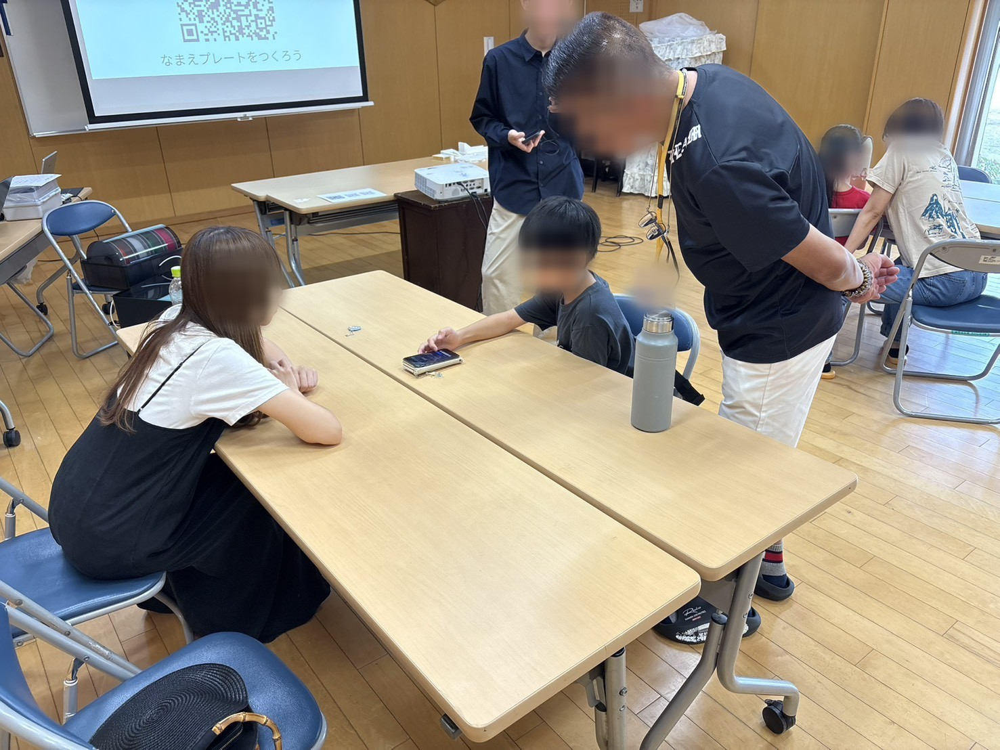
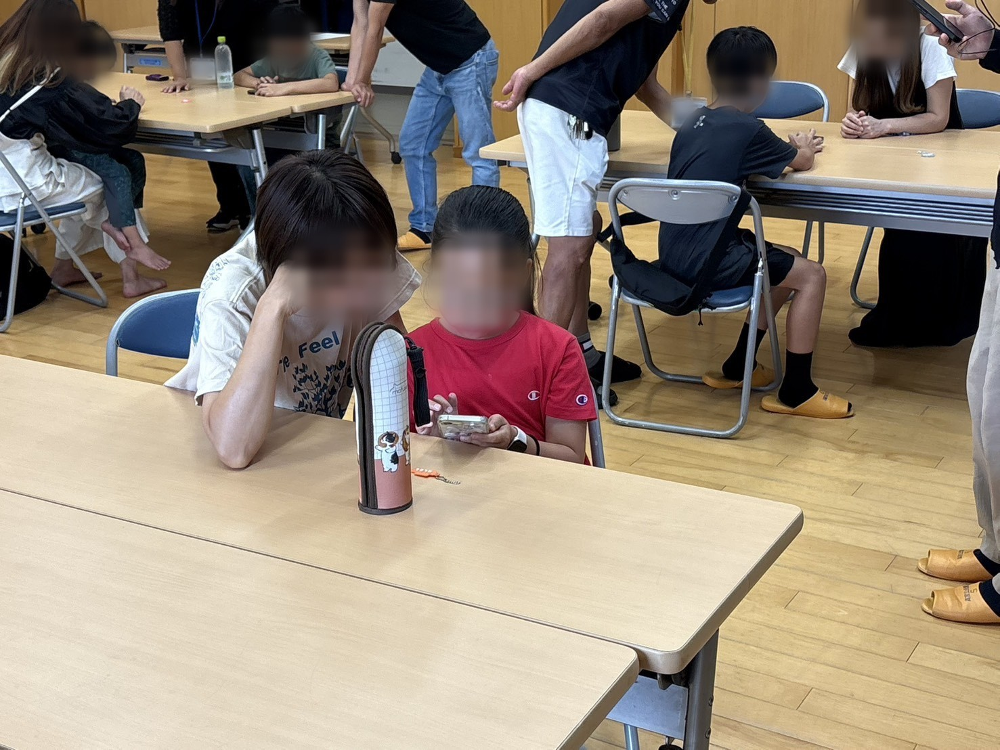
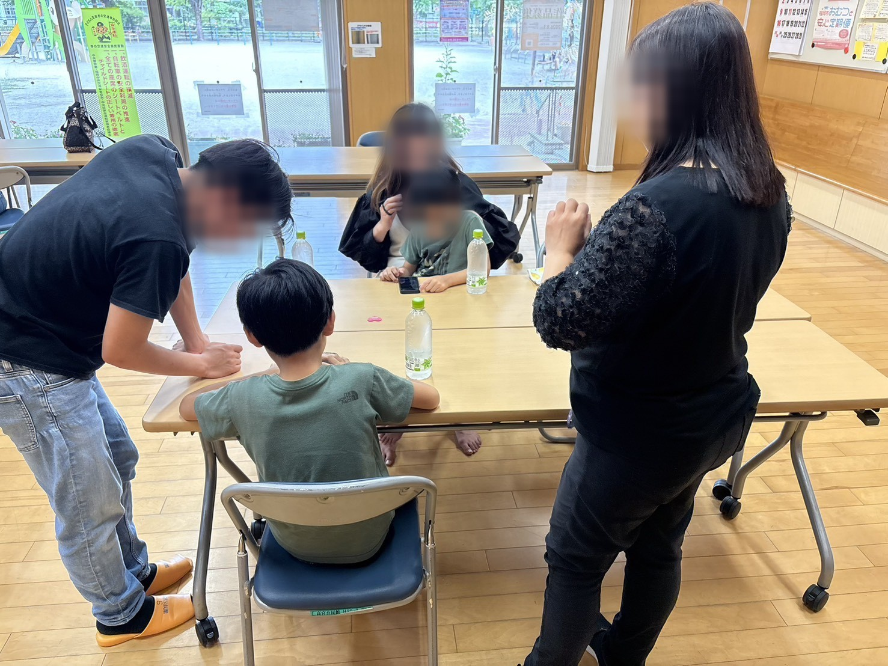
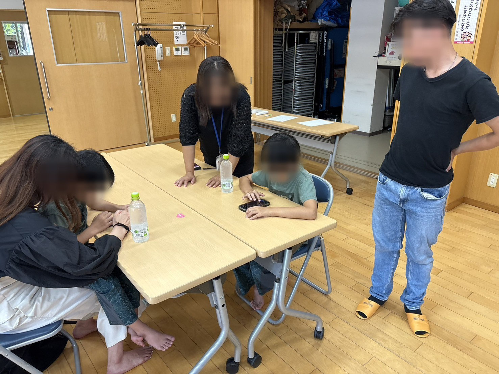
3Dプリンターが造形する様子を間近で観察
デザインしたデータがどのように立体物へ変わっていくのか、実際に稼働する3Dプリンターの内部を覗き込んで観察しました。樹脂（フィラメント）が溶けて1層ずつ正確に積み重なっていく動きに、子どもたちは釘付けになっていました。
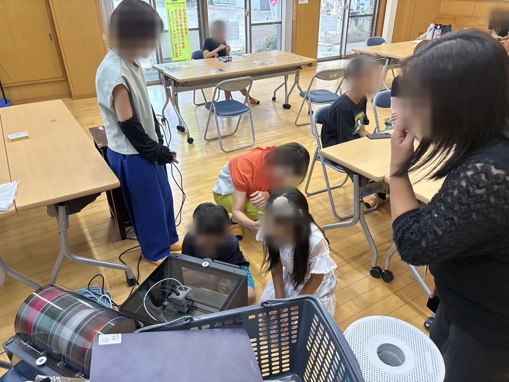
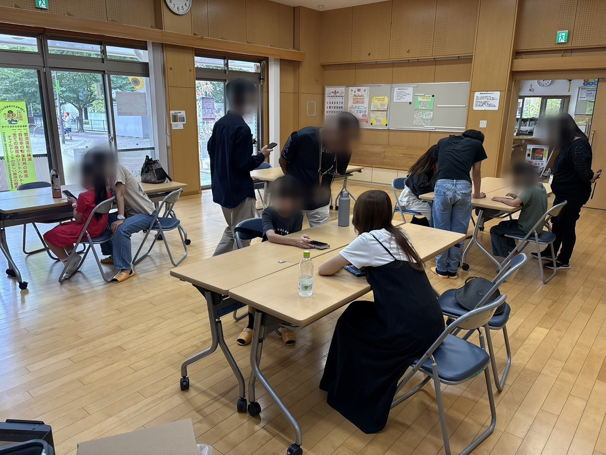
「からくりおもちゃ」の組み立てとカラーリング
ネームプレートが出力されるまでの時間を活用し、3Dプリンターで出力したパーツキット（観覧車・メリーゴーランド・お魚など）の組み立てに挑戦しました。図解シートを見ながら歯車や軸を組み合わせ、最後にペンでカラフルに色塗りをして、自分だけの動く作品を完成させました。
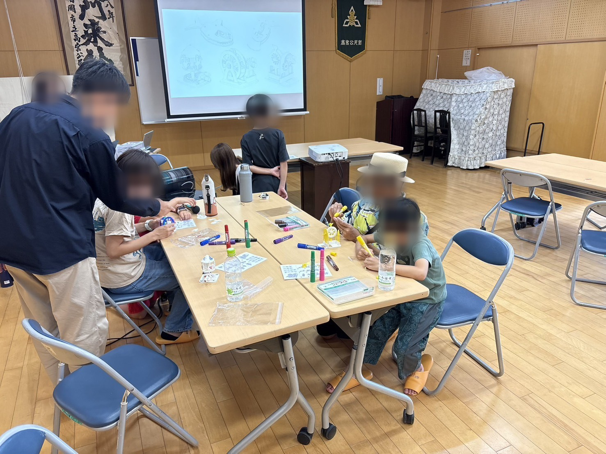
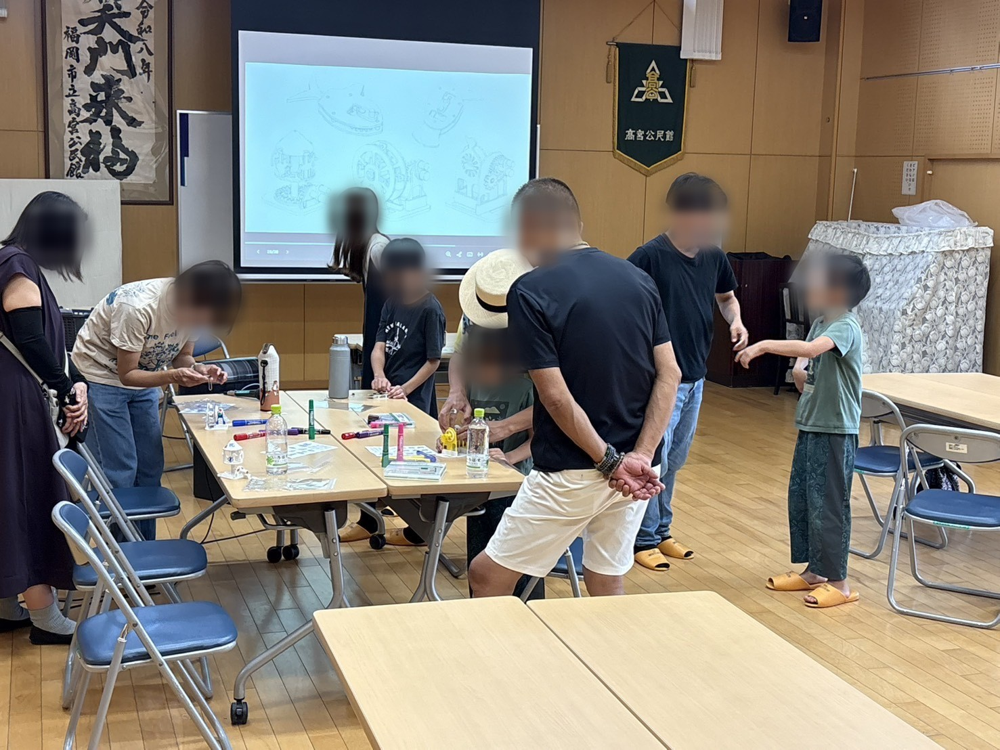

体験会で使用したオリジナル3Dからくりモデル
小学生でも自分の手で仕組みを理解しながら組み立てられるよう、パーツ構成を独自に設計・制作した3Dプリントモデルです。
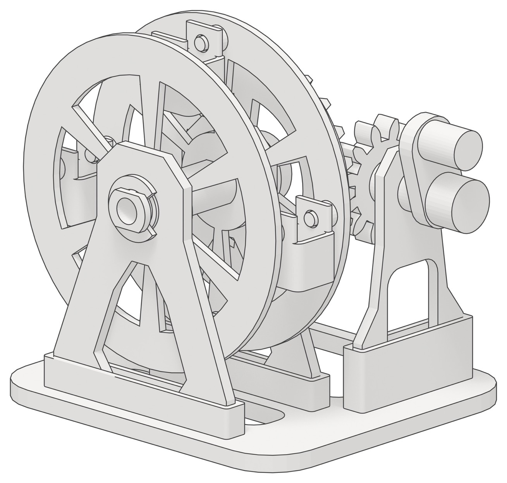
ハンドルを回すと歯車が噛み合い、4つのゴンドラが水平を保ちながらゆっくり回転する観覧車モデル。
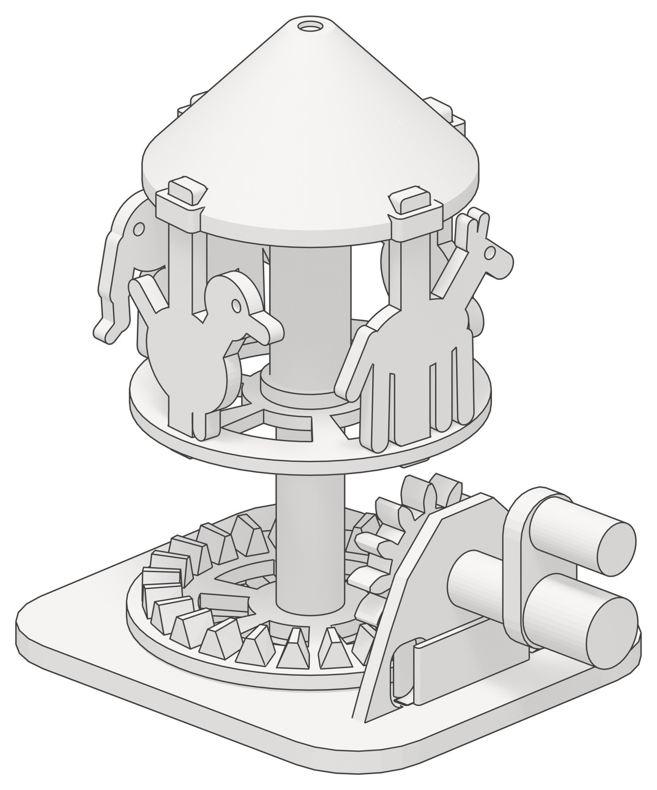
縦の回転を横の回転へ変換するクラウンギアの仕組みを使い、動物たちがくるくる回るメリーゴーランドモデル。
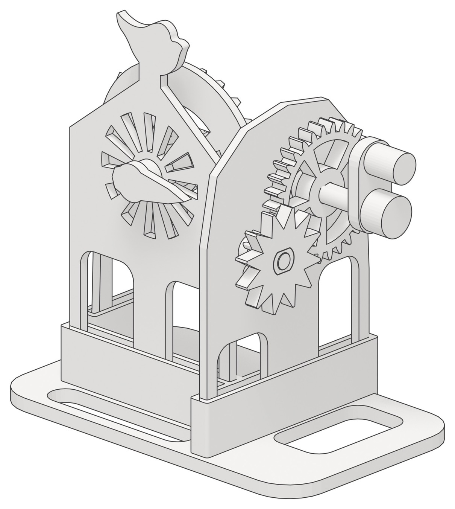
大小の歯車の組み合わせによる速度変化と回転の伝達を、外から一目で観察できるモデル。
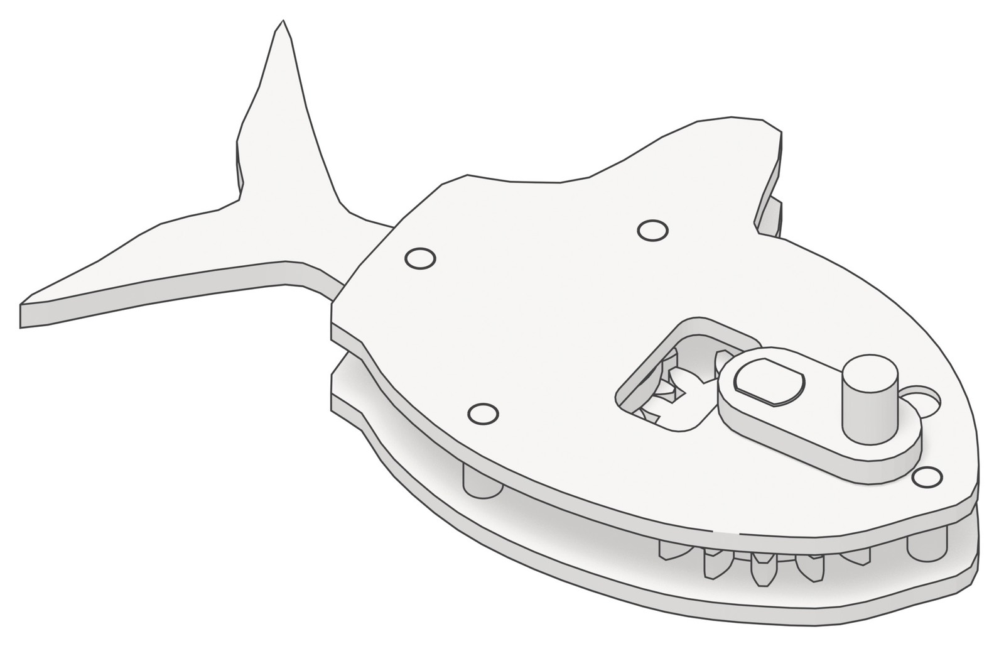
内部の歯車とリンク機構によって、ハンドルを回すと尾びれや頭が本物の魚のように左右に動くモデル。
※掲載している写真は、参加者の皆さまより撮影および利用の同意をいただいた上で、プライバシー保護のためお顔等が判別できないよう加工して掲載しています。